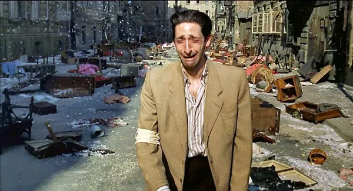

"O Pianista" é um filme de drama histórico dirigido por Roman Polanski, lançado em 2002. Baseado nas memórias do pianista polonês Władysław Szpilman, o filme retrata a história real de um músico judeu durante a Segunda Guerra Mundial, que enfrenta a perseguição nazista e luta pela sobrevivência em meio ao caos e destruição da ocupação alemã em Varsóvia.
A narrativa se passa em Varsóvia, na Polônia, em 1939, no início da Segunda Guerra Mundial. Władysław Szpilman (interpretado por Adrien Brody) é um talentoso pianista judeu que vive com sua família em um gueto, após a ocupação alemã. Conforme a perseguição aos judeus aumenta, a família Szpilman é separada e enviada para campos de concentração.
Durante sua jornada pela sobrevivência em Varsóvia, Szpilman testemunha a destruição de sua cidade natal, com os nazistas impondo sua ocupação e estabelecendo um regime de terror. A vida do pianista torna-se uma luta diária pela sobrevivência, enfrentando fome, falta de abrigo adequado e o constante perigo de ser denunciado ou capturado pelos nazistas.
Apesar do cenário sombrio, "O Pianista" também retrata atos de bondade e heroísmo por parte de alguns poloneses não judeus. Szpilman recebe ajuda de pessoas que arriscam suas vidas para escondê-lo e fornecer-lhe mantimentos e abrigo. Essas ações altruístas demonstram a capacidade de empatia e compaixão mesmo nos momentos mais sombrios da história.
"Eu toco o piano. O que faço, o que sou... é graças a Deus, a mim mesmo, e graças a você, se quiser. Mas, claro, principalmente a mim mesmo. E se você tivesse que desistir de tudo isso? Se você tivesse que desistir de seu talento, sua esperança? Se você tivesse que desistir de tocar o piano, como você continuaria vivendo?"
Durante sua clandestinidade, o pianista é confrontado com o levante do gueto de Varsóvia em 1943, quando os judeus tentam se revoltar contra os nazistas, mas são cruelmente reprimidos. A narrativa retrata a deterioração gradual das condições de vida em Varsóvia, bem como os atos de resistência e heroísmo de alguns poloneses.
Uma das cenas mais memoráveis do filme ocorre quando Władysław Szpilman, escondido em um apartamento abandonado, é descoberto por um oficial alemão chamado Capitão Wilm Hosenfeld. Contrariando as expectativas, Hosenfeld decide proteger Szpilman e fornece-lhe mantimentos e abrigo. Essa interação entre o pianista judeu e o oficial alemão humaniza um personagem que, até então, representava a opressão nazista.

Eventualmente, o pianista é descoberto por Hosenfeld, que o protege e ajuda a sobreviver até a libertação de Varsóvia pelas forças aliadas no final da guerra. O desfecho do filme é marcado pela esperança, com Szpilman emergindo do seu esconderijo e testemunhando a cidade devastada, mas encontrando força na reconstrução e no renascimento da vida.
"O Pianista" é aclamado por sua autenticidade histórica, recriando com precisão os eventos e os horrores do Holocausto. A atuação de Adrien Brody é intensa e cativante, rendendo-lhe o Oscar de Melhor Ator em 2003. O filme serve como um lembrete poderoso das atrocidades cometidas durante o Holocausto, da importância da memória histórica e da resistência humana em tempos de adversidade.
Pedro Iuri
18 Sep 2017Uma história emocionante!